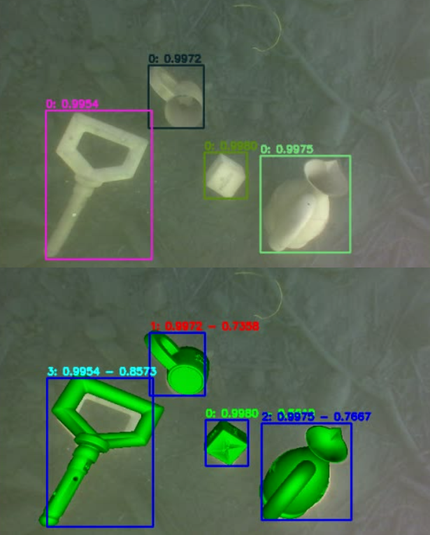

"The largest synthetic and real dataset for Object Detection and 6D Pose Estimation counting over one million Full HD images taken in 105 different scenarios easily and separately selectable. Designed to benchmark not only the generalization capability of the Semantic Segmentation architectures but also to assess their domain adaptation performances."

Overview
Acquaint yourself with the UW Dataset by gaining knowledge of its distinctive qualities, exploring the diversity of the data it contains, and understanding the descriptions of the labels used.